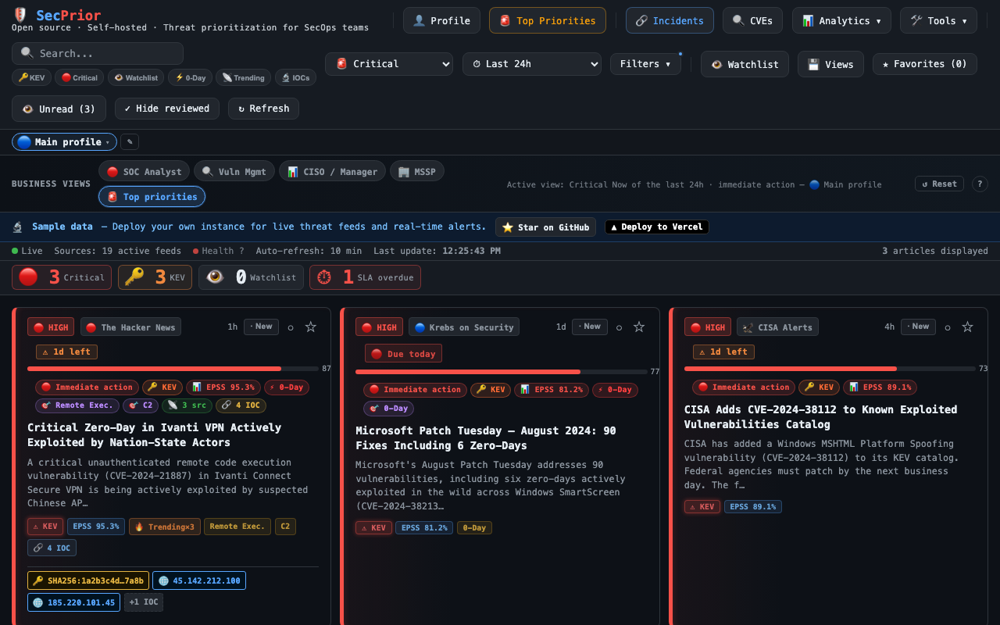
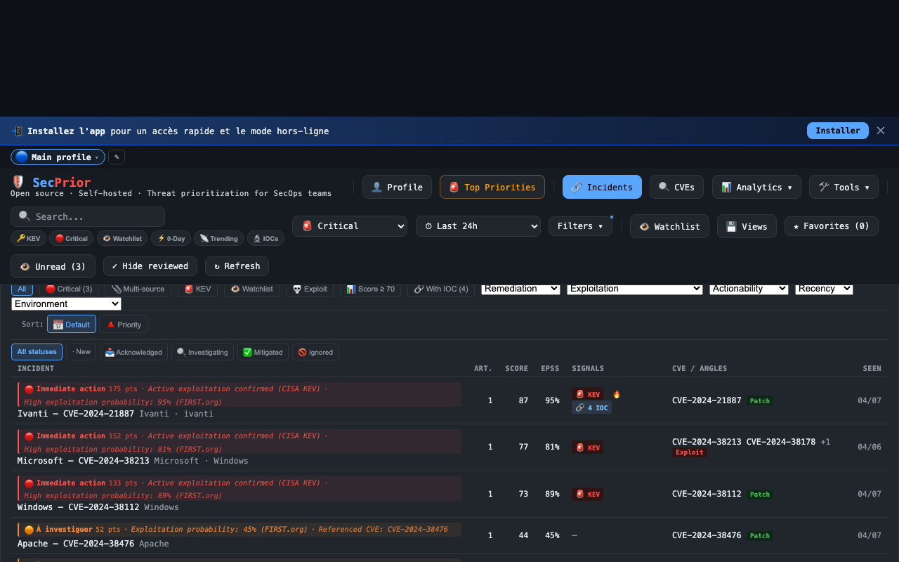
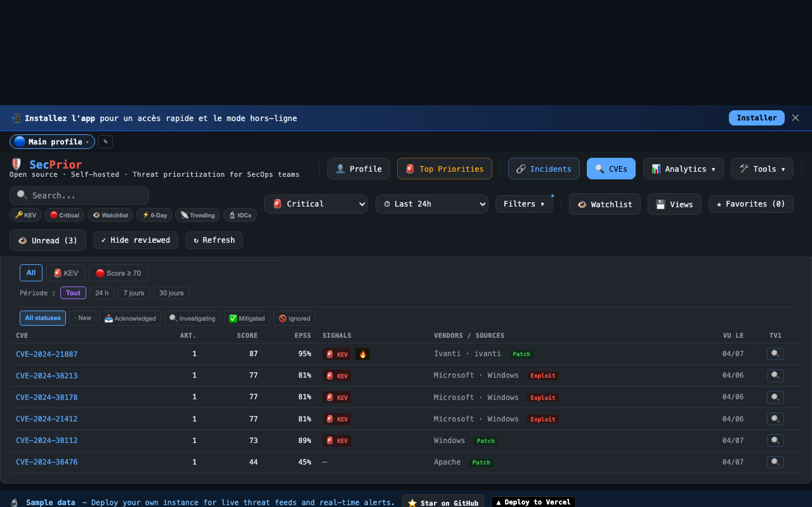
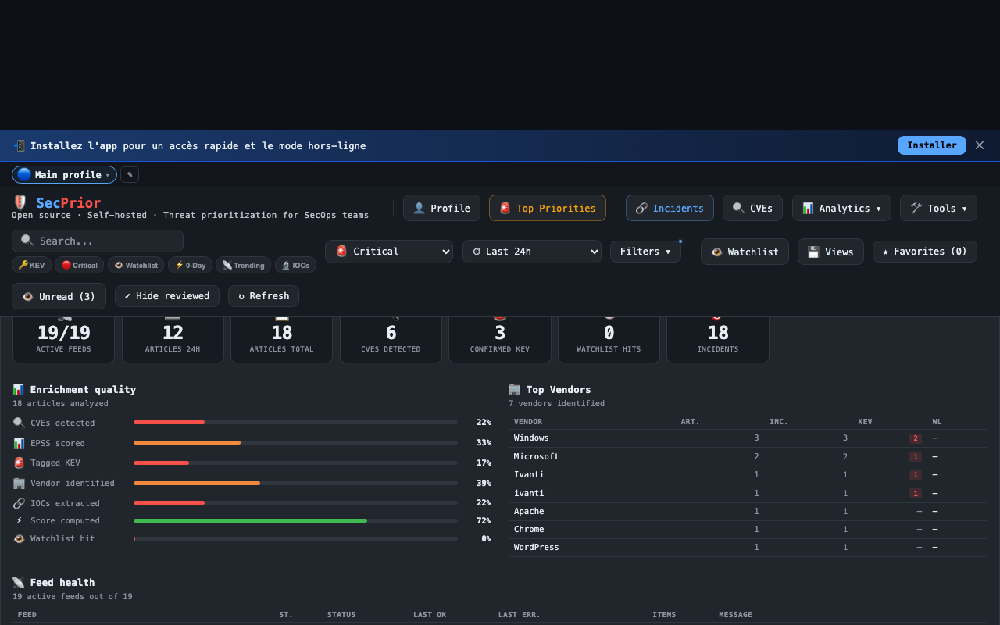

SecPrior helps security teams turn fragmented threat coverage into structured, prioritized, and actionable intelligence.
Stop treating every feed item the same. Correlate incidents, enrich CVEs, extract IOCs, and focus attention where it matters first.
Open source · Self-hostable · Analyst-ready · Explainable by design
The problem
Security teams already have feeds, alerts, dashboards, and reporting. What they often lack is clear operational prioritization.
SecPrior was built to solve a familiar problem for defenders who deal with real-world threat volumes every day.
Too much noise
Dozens of RSS feeds, vendor advisories, blogs, and vulnerability sources — all mixed together with no differentiation.
Too little prioritization
A blog post and an actively exploited CISA KEV look the same in a feed reader. Context and urgency are invisible.
Too little context
You know something is critical, but not why — and not whether it actually applies to your environment and stack.
Too much manual triage
Analysts spend hours sorting signals instead of acting on them. Structured prioritization should not require manual effort.
SecPrior addresses this by correlating related coverage, enriching signals with vulnerability and exploitation context from NVD, FIRST EPSS, and the CISA KEV catalog, extracting usable indicators, and surfacing what deserves attention first — with full transparency on why.
Core capabilities
SecPrior helps teams move from feed overload to decision-ready threat context.
Group related coverage into consolidated incidents using a Union-Find algorithm on CVE IDs and Jaccard title similarity. Follow one evolving threat instead of chasing duplicate posts across multiple sources.
Score threats 0–100 with transparent, weighted signals: CVSS severity (30%), EPSS exploitation probability (25%), CISA KEV status (25%), source corroboration (10%), IOC indicators (5%), and keyword patterns (5%).
Connect vulnerabilities to vendors, live reporting, and related incidents. Understand not just what is critical — but why it matters now, with live CVSS scores, EPSS probabilities, and KEV confirmation.
Automatic extraction of IPs, domains, hashes, and URLs from article content. Deep scan mode fetches full article text for richer extraction. Copy, export to CSV/JSON/TXT, and operationalize indicators directly from threat content.
Real triage support with analyst statuses, notes, saved views, SLA tracking, and MITRE ATT&CK tactic mapping. SLA badges turn red when remediation deadlines approach — Critical: 1d, Investigate: 7d, Watch: 30d.
Measure feed health, enrichment quality, signal coverage, top vendors, top incidents, and EPSS leaders through a dedicated operational visibility layer with live stats.
Structured outputs that help analysts, SecOps leads, and managers act without reading every source manually.
📰 Daily briefing
Top threats, KEV count, EPSS leaders, structured digest
📈 Exec View
CISO-ready posture summary, KPIs, top incidents
📤 Export
PDF report, CSV/JSON export for SIEM or reporting tools
What it delivers
The difference between passive monitoring and operational prioritization.
Correlated incidents
Instead of duplicate headlines across 12 sources
Explainable priority
Instead of flat feed volume with no context
Operational context
Instead of isolated signals without environment relevance
IOC workflows
Instead of hidden indicators buried in article text
Analyst tracking
Instead of passive monitoring with no status or history
Signal quality visibility
Instead of black-box aggregation you cannot audit
See it in action
Real views from SecPrior running in demo mode with sample threat data.




Personas
SecPrior is designed for teams that need more actionable monitoring without adding more clutter to analyst workflows.
Prioritize what needs review first, identify incidents with real signal, and support morning triage. Know what exploded overnight before the standup.
Track evolving incidents, correlate reporting across sources, monitor watchlists, and extract indicators for investigation and detection.
Use visibility, incident grouping, SLA tracking, and analyst workflows to keep teams focused on what matters now — not what was loudest.
Get structured summaries, top incidents, top vendors, and executive-ready visibility through the Exec View — without raw feed overload.
Manage multiple watchlist profiles, use persona presets, and generate PDF/CSV exports for per-client reporting and SLA documentation.
Run SecPrior with full control, minimal dependencies, no built-in telemetry, and the ability to audit or adapt every component.
Intelligence pipeline
SecPrior ingests threat coverage from 20+ sources, normalizes content, enriches it with vulnerability and exploitation context, extracts indicators, and turns fragmented reporting into prioritized security signals — entirely client-side, with optional server-assisted proxying.
Collect
Parse RSS/Atom, normalize articles from 20+ sources
Enrich
CVSS from NVD, EPSS from FIRST, KEV from CISA
Deduplicate
Union-Find on CVEs + Jaccard title similarity
Extract IOCs
IPs, domains, hashes, URLs from article text
Score
Composite 0–100 (CVSS 30% · EPSS 25% · KEV 25% · sources 10% · IOC 5% · keywords 5%)
Contextualize
Watchlist matching, MITRE ATT&CK detection, trending signals
Prioritize
Critical Now · Investigate · Watch · Low — with full evidence
What gets added at each stage:
Analyst-first design
SecPrior is not just a feed reader. It is designed to support how analysts actually work — from morning triage to end-of-day reporting.
Integrations
Alert modes
Enrichment sources
Open source by design
SecPrior is built for teams that want control, transparency, and adaptability — whether you run it for a homelab, an internal security team, or a broader SecOps workflow.
Open source
Full codebase on GitHub, MIT license
Self-hostable
Vercel, local, or any Node.js host
Client-side first
Pipeline runs in browser, server only proxies public APIs
Zero telemetry
No analytics, no tracking, no data sharing
Minimal dependencies
Vanilla JS, HTML, CSS — zero front-end framework
Easy to adapt
Readable, modular code designed to be modified
Quick start
Three ways to get started — from one-click deploy to full self-hosted setup.
One-click deploy
RecommendedDeploy directly to Vercel. No configuration required for demo mode. Add environment variables for live feeds and alerts.
▲ Deploy to VercelLocal development
$ git clone github.com/dgiry/secprior
$ cd secprior
$ npm install
$ npm run dev
# → http://localhost:3001
Runs in demo mode with sample data. Live RSS feeds require Vercel for the feed proxy.
Self-hosted server
Any Node.js ≥ 20 host works. The api/ directory contains serverless functions adaptable to Express or any Node.js framework.
1. Add your feeds
Configure RSS feeds from vendor advisories, CERT alerts, security blogs, and any Atom/RSS source in Settings → Feeds.
2. Define your watchlist
Add vendors, products, technologies, and keywords relevant to your environment. Matching articles surface to the top automatically.
3. Review priorities
Start your shift with the dashboard, review correlated incidents, act on Critical Now items first, and generate a briefing when done.
Project status
SecPrior is actively developed as an open-source project focused on operational threat prioritization. The core platform is already usable for real analyst workflows.
Some integrations and advanced capabilities are still evolving. Contributions and feedback are welcome.
Available today:
On the roadmap: multi-tenant profiles, STIX/TAXII, AI briefing summaries, Docker image
Get started
Use SecPrior to turn fragmented cyber threat coverage into structured, explainable, and actionable security priorities.
Open source · Self-hostable · Analyst-ready · Explainable by design